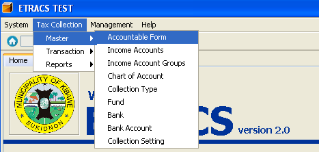
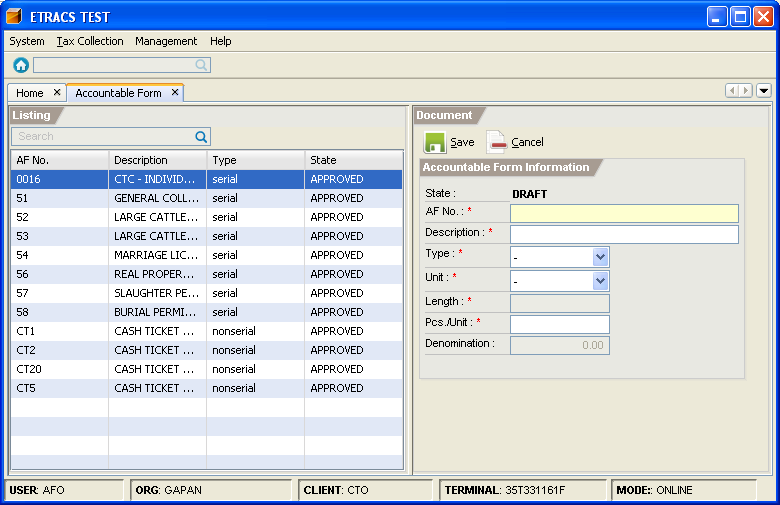
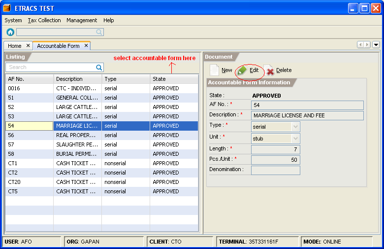
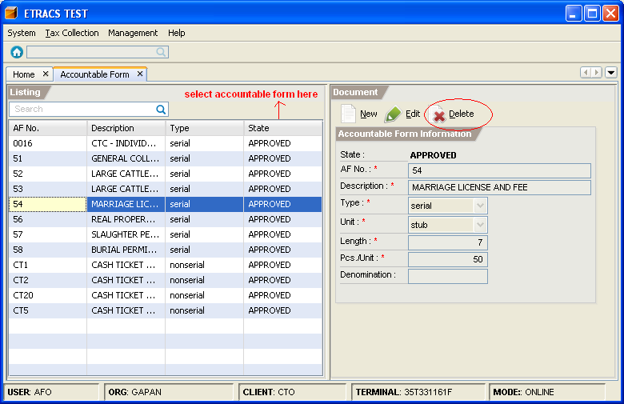

Managing Accountable Forms
This facility enables you to add, edit, and delete an accountable form.
How to add an Accountable Form?
1. On the menu toolbar, go to "Tax Collection -> Master -> Accountable Form" item.

2. Click on the "New" button.
3. Fill in the accountable form information.

4. Click on the "Save" button.
5. Click on the "Approve" button.
How to edit an accountable form information?
1. Go to "Accountable Form" page. (Please refer to Adding an Accountable Form - Step 1)
2. Select the accountable form item from the list, and click on the "Edit" button.

3. Modify the accountable form information.
4. Click on the "Save" button.
How to delete an Accountable Form?/h3>
1. Go to "Accountable Form" page. (Please refer to Adding an Accountable Form - Step 1)
2. Select the accountable form item from the list, and click on the "Delete" button.
